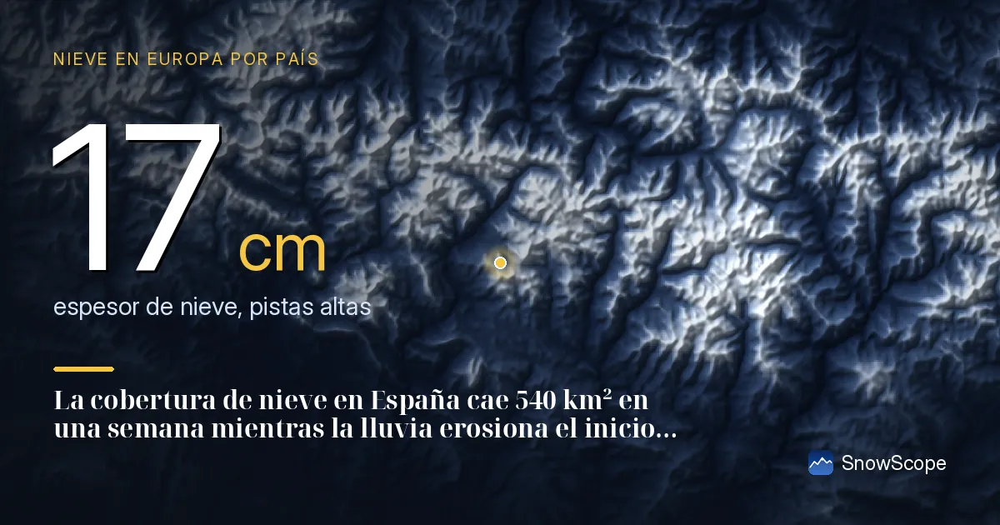
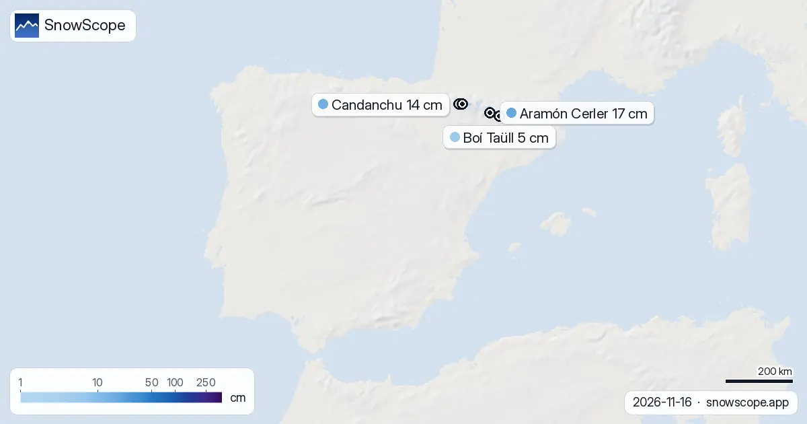

La cobertura de nieve en España cae 540 km² en una semana mientras la lluvia erosiona el inicio de temporada
La nieve española se derrite rápidamente. La zona blanca se redujo 540 km² en los últimos siete días, y solo Aramón Cerler y algunas estaciones pirenaicas cuentan con nieve suficiente para esquiar.
Consulta la previsión de nieve en tiempo real de Aramón Cerler en la app SnowScopeEspesor de nieve, alertas de nieve polvo y mapa 3D, gratis.
La nieve desaparece en toda España
El 16 de noviembre, el área nevada de España medía 310 km², bajando desde 850 km² hace una semana. Eso supone una pérdida de 540 km² en siete días. Solo ayer perdimos 440 km², una caída brusca que nos muestra que la lluvia y el aire suave han estado erosionando el manto de nieve de inicio de temporada. La fecha de los datos medidos es 16 de noviembre.
La lluvia en cotas bajas e intermedias es la culpable. Entre 500 y 2000 m de altura, ahora hay cobertura de nieve cero. Incluso por encima de 2000 m, solo el 4 por ciento del área tiene nieve. La nieve que queda se encuentra únicamente por encima de 2500 m, donde nuestro modelo muestra una profundidad media de 3 cm en apenas un tercio del terreno.
| Estación | Espesor de nieve | Nieve nueva, 72 h | Previsto, próximos días | Cota máx. |
|---|---|---|---|---|
| Aramón Cerler | 17 cm | 13 cm | 9 cm | 2618 m |
| Candanchu | 14 cm | 28 cm | 7 cm | 2238 m |
| Formigal | 11 cm | 24 cm | 6 cm | 2264 m |
| Boí Taüll | 5 cm | 11 cm | 7 cm | 2747 m |
| Estació d'Esquí Baqueira-Beret | 3 cm | 5 cm | 6 cm | 2600 m |

Aramón Cerler lidera un campo escaso
Aramón Cerler encabeza las estaciones españolas con 17 cm de nieve en el suelo según el 16 de noviembre. Candanchú le sigue con 14 cm, seguida de Formigal con 11 cm. Las tres se encuentran en los Pirineos españoles, donde cayeron las precipitaciones más importantes de las últimas 72 horas: 29 cm en esa cordillera, comparado con 12 cm en la Cordillera Cantábrica y 4 cm en la Sierra Nevada.
Solo 6 de las 31 estaciones españolas tienen nieve esquiable. El resto están peladas. Estas seis están todas en las montañas del norte donde la altitud y la humedad marítima aportaron más precipitación. En cotas menores en la Sierra Nevada y más al sur, la roca aflora casi por todas partes.
Qué traerán los próximos días
El pronóstico de 7 días muestra un alivio modesto pero sin salvación. Nuestro modelo predice un máximo de 4 cm de nieve nueva en toda España durante los próximos siete días, siendo el 19 de noviembre el día más nevado con 4 cm. Los próximos tres días verán apenas 2 cm. Incluso Aramón Cerler, el líder en profundidad, espera solo 9 cm de nieve nueva en los próximos tres días.
La tendencia hacia finales de noviembre se ve algo mejor. Entre el 24 y el 30 de noviembre, el modelo pronostica un máximo de 32 cm para algunas zonas de España, un cambio sustancial respecto a la sequedad actual. Eso queda a dos semanas vista, y mucho depende de qué tan baja baje la masa de aire y dónde se tracen las tormentas.
La altitud es ahora el único refugio
La nieve existe solo por encima de 2500 m. Nuestro modelo muestra que entre 2000 y 2500 m, solo el 4 por ciento del terreno tiene blanco, y las profundidades no están medidas. Entre 1500 y 2000 m, 1500 a 1000 m, y 1000 a 500 m, no hay cobertura de nieve. Este es un inicio de temporada inusualmente magro, típico de otoños secos en el Atlas y otras cordilleras continentales.
Boí Taüll se sitúa a 2747 m en su cima, la más alta de las estaciones registradas, pero solo tiene 5 cm. Estació d'Esquí Baqueira-Beret, también alta a 2600 m, tiene 3 cm. La altitud sola no garantiza nieve esquiable cuando la temporada empieza tan escasa.
Nuestros vecinos la están pasando mejor
Francia, nuestro vecino del oeste, tiene significativamente más nieve. Les Arcs lidera las estaciones francesas con 94 cm, y los próximos siete días se pronostica que traerán 105 cm de nieve nueva. Andorra se sitúa entre España y Francia con una cobertura blanca del 2 por ciento, su líder Pal-Arinsal con 5 cm. El contraste es marcado: los sistemas atlánticos costeros cargan nieve en los Alpes franceses y en la frontera pirenaica alta, pero España al sur de esa línea está más seca.
Qué estar atento
La nieve de inicio de temporada tan escasa a menudo no aguanta. Estate atento al pronóstico para el 19 de noviembre, cuando nuestro modelo espera la nevada más significativa para España. Si ese sistema se traciona más al sur, Boí Taüll, Aramón Cerler y Formigal podrían recibir otros 6 a 9 cm. Sin eso, la pequeña ventana para esquiar en noviembre se cerrará rápidamente.
La segunda semana de finales de noviembre (24 a 30 de noviembre) ofrece más promesas. Esa es cuando el modelo muestra 32 cm posibles para las partes más secas de España. Para entonces, si la tendencia de noviembre se mantiene seca y cálida como ha sido hasta ahora, solo el terreno más alto por encima de 2600 m habrá sobrevivido. Usa SnowScope para registrar la profundidad y cobertura mientras nos acercamos a esa ventana más prometedora.
Consejos para esquiadores
- Esquía por encima de 2500 m si sales en la próxima semana. Solo las altitudes por encima de ese umbral tienen nieve consistente en el suelo. Aramón Cerler y Boí Taüll son tus mejores opciones, aunque ambas están escasas.
- Estate atento el 19 de noviembre. Ese es el pico de pronóstico de nieve nueva. Si tu estación elegida recibe su porción de pronóstico, las profundidades deberían mejorar lo suficiente para extender el área esquiable otros 100 m aproximadamente.
- Antes de irte fuera de pista, consulta el boletín oficial de avalanchas de tu región. La nieve de inicio de temporada con poca adherencia en terreno escaso puede esconder capas débiles y causar deslizamientos sorpresa.
- Planifica finales de noviembre (después del 24) como el inicio más realista de la temporada en España. El modelo es más confiado en un evento de nevada significativa entre el 24 y el 30 de noviembre.
- Registra tu estación elegida en SnowScope diariamente durante esta ventana. Las profundidades están cambiando rápidamente, y lo que parece esquiable hoy puede no serlo mañana.
Sobre estas cifras
Los espesores de nieve de las estaciones son la nieve más profunda en las pistas altas según el modelo de nieve de SnowScope (unos 1 km, cálculo del 16 de noviembre); son estimaciones para una zona, no una medida en un punto. Los valores de las estaciones de medida son medidas en la fecha indicada. Las previsiones pueden cambiar. Consulta siempre el boletín oficial de aludes antes de salir fuera de pista.
Citar este informe
Para investigación, docencia o prensa: cifras y gráficos reutilizables libremente bajo CC BY 4.0 con esta cita.
SnowScope (2026), La cobertura de nieve en España cae 540 km² en una semana mientras la lluvia erosiona el inicio de temporada, https://snowscope.app/blog/es/2026/11/spain-snow-report-16-november-2026.html, consultado el 2026-11-16
SnowScope (Atlas Labs). (2026, November 16). La cobertura de nieve en España cae 540 km² en una semana mientras la lluvia erosiona el inicio de temporada. SnowScope snow reports. https://snowscope.app/blog/es/2026/11/spain-snow-report-16-november-2026.html
BibTeX
@misc{snowscope2026spainsnowreport16novembe,
author = {{SnowScope (Atlas Labs)}},
title = {La cobertura de nieve en España cae 540 km² en una semana mientras la lluvia erosiona el inicio de temporada},
year = {2026},
month = nov,
howpublished = {\url{https://snowscope.app/blog/es/2026/11/spain-snow-report-16-november-2026.html}},
note = {Published 2026-11-16 20:42 UTC; accessed 2026-11-16}
}· CC BY 4.0 · Métodos, datos y herramientas →
Aramón Cerler: nieve y temperatura según la altura, este invierno vs el pasado (herramientas) →
Sigue Aramón Cerler
Gratis: un aviso cuando llega la nieve y la previsión cada mañana.